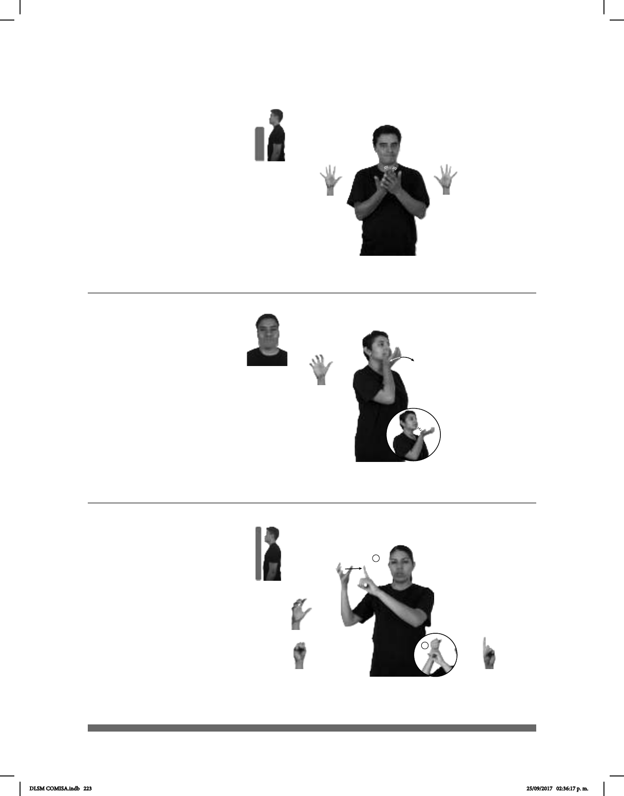

223
Seña: SM
5.18
Palma oblicua hacia arriba y hacia
adentro.
A la altura de la barbilla.
La mano se mueve formando
círculos hacia el frente.
Cabeceo de atrás hacia
adelante.
Simula la acción de comer una
jícama.
sust. f. Tubérculo comestible de for-
ma semejante a la de una cebolla, duro, quebra-
dizo, blanco y jugoso; se come crudo aderezado
con sal, limón y chile o en ensaladas.
Seña: SB
MD y MB 5.1
MD y MB palmas
hacia adentro.
A la altura del pecho,
MD detrás de MB.
MD cada uno de los
dedos se mueve alternadamente.
v. tr. Dejar pasar cierto
tiempo hasta lograr algo mientras
algo sucede o mientras se reúne con
otra persona.
(5-G 91)
(5-G 92)
pro-YO pro-TÚ ESPERAR AFUERA
allá
Te espero allá afuera.
pro-YO GUSTAR MUCHO JÍCAMA
Me gusta mucho la jícama.
1
2
Seña: SB
MD seña que pasa
de 5.16 a S.1, MB 1.1
MD palma hacia la
izquierda, MB palma hacia afuera.
La MD inicia a la
altura del hombro y termina sobre
MB. MB a la altura del hombro del
lado derecho.
MD recto y después
sujeta el índice de MB.
v. tr. Conseguir o
alcanzar lo que se intenta o desea.
(5-G 93)
pro-YO SUERTE LOGRAR pro-YO PODER
Yo tuve suerte, lo pude lograr.
DLSM COMISA.indb 223 25/09/2017 02:36:17 p. m.